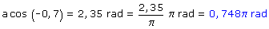

|
Ángulos con igual coseno En general hay dos ángulos que tienen el mismo coseno y su su-ma vale 2·π rad. Conviene dar estos ángulos con signo positivo y en función de π También tienen el mismo coseno todos los ángulos que difieren en k·2π rad (En este caso k es el número de oscilación que vale: 0, 1, 2,...) Ejemplo: Hallar los ángulos cuyo coseno vale -0,7  El otro ángulo que tiene el mismo coseno: (2π - 0,748π) rad = 1,25π rad |